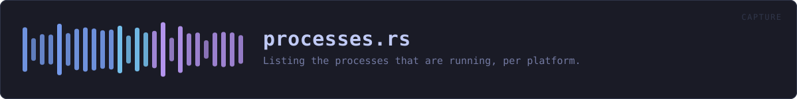

crates/veilvoice-capture/src/processes.rs
veilvoice-capture · 255 lines · read the source
Listing the processes that are running, per platform.
Linux reads files; the other two ask a tool
On Linux every process publishes its own name at /proc/<pid>/comm, so the list is a directory walk and nothing is spawned. Windows and macOS have no such file, and their native APIs are FFI — #![forbid(unsafe_code)] holds here as it does everywhere else in the workspace, so this asks a tool the system already ships, exactly as veilvoice-watch asks the registry and veilvoice-drivers asks driverquery.
What this can see
Processes belonging to the user running VeilVoice, and — depending on the platform and the privileges — usually not much more. A recorder running as another user or as a service may not appear at all. That is a real limit and crate::SCOPE states it rather than leaving an empty list to be read as an empty machine.
comm on Linux is truncated to fifteen characters by the kernel, so a longer name in crate::programs never appears there. Two entries in that table are longer than fifteen characters and carry both spellings for exactly that reason — ps and every Windows listing give the full one. A test holds the rule that every program with a Unix name has at least one that survives truncation, because a sixteen-character executable added later would otherwise stop matching on one platform only, silently.
WHAT THIS FILE CONTAINS
255 lines defining 4 functions (0 public), 0 types and 0 constants. Everything below is read out of the source, so it cannot disagree with the code.
WHAT CALLS WHAT
The functions this file defines, and the calls between them. An edge means the callee's name appears, called, inside the caller's body — a syntactic reading, not a type-resolved one.
The same graph as Mermaid source
%%{init: {"theme":"base","themeVariables":{"background":"#1a1b26","primaryColor":"#1f2335","primaryTextColor":"#c0caf5","primaryBorderColor":"#7aa2f7","secondaryColor":"#16161e","tertiaryColor":"#16161e","lineColor":"#737aa2","textColor":"#c0caf5","mainBkg":"#1f2335","nodeBorder":"#7aa2f7","clusterBkg":"#16161e","clusterBorder":"#2f3549","fontFamily":"ui-monospace, SFMono-Regular, Consolas, monospace","fontSize":"14px"}}}%%
flowchart TD
n_running["running<br/>line 34"]
n_linux["linux<br/>line 54"]
n_spawned["spawned<br/>line 87"]
n_parse["parse<br/>line 139"]
n_running --> n_linux
n_running --> n_spawned
n_spawned --> n_parse
click n_running href "https://github.com/tilas01/veilvoice/blob/main/crates/veilvoice-capture/src/processes.rs#L34" "open the source"
click n_linux href "https://github.com/tilas01/veilvoice/blob/main/crates/veilvoice-capture/src/processes.rs#L54" "open the source"
click n_spawned href "https://github.com/tilas01/veilvoice/blob/main/crates/veilvoice-capture/src/processes.rs#L87" "open the source"
click n_parse href "https://github.com/tilas01/veilvoice/blob/main/crates/veilvoice-capture/src/processes.rs#L139" "open the source"
classDef helper fill:#1f2335,stroke:#bb9af7,color:#c0caf5
class n_running,n_linux,n_spawned,n_parse helperThis site loads no third-party script, so it cannot run Mermaid; the diagram above is the same nodes and edges drawn by the generator instead. GitHub renders the source below directly.
ITEMS
| Item | Line | Documentation |
|---|---|---|
running pub(crate) fn | 34 | Every process name this build can see, lower-cased and without a path. |
linux fn | 54 | Walk /proc and read each process's own name. |
spawned fn | 87 | Ask the system's own process lister. |
parse fn | 139 | Pull process names out of a listing. |